来源：https://sqm685cmohb.feishu.cn/docx/P3a3dMF64oiLdCxRcXGcujUknTf
大家好，我是志辉，10 年大数据架构，现专注 AI 编程。
最近Claude Code 的人越来越多使用。
有的人不知道如何跟 ide 结合，有的人不知道如何粘贴图片。
那今天就直接上干货，14 招学会，走遍天下都不怕。
从此你就是 Claude Code 高手。
讲解常用技巧。其实ClaudeCode需要什么技巧，只要你有需求，正常跟它聊天，大部分的问题就可以解决。
戒掉 Cursor 的使用思路。
ClaudeCode是大道至简的思路。就是干就行。
1、提示词技巧
2、命令/快捷键技巧
3、记忆文件（规则文件）
4、工具
从第一个帮助命令开始。
claude --help
很简单，就是看哪些命令参数可以用到 Claude 命令上。
比如经常使用的如下：
查看版本
检查 cladue 的安装情况
claude doctor
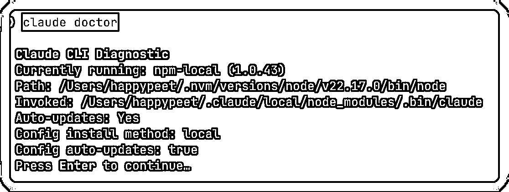
查看 mcp 的相关配置。
claude mcp list
claude mcp --help
claude 的配置信息
claude config --help
查看列表
Claude config list
俗称的 yolo 模式，我叫他狂飙模式。
claude --dangerously-skip-permissions
详细的这个后面也会讲。
如下图，搜索 Claude Code，注意要认准是 Anthropic 公司，这个是官方的。
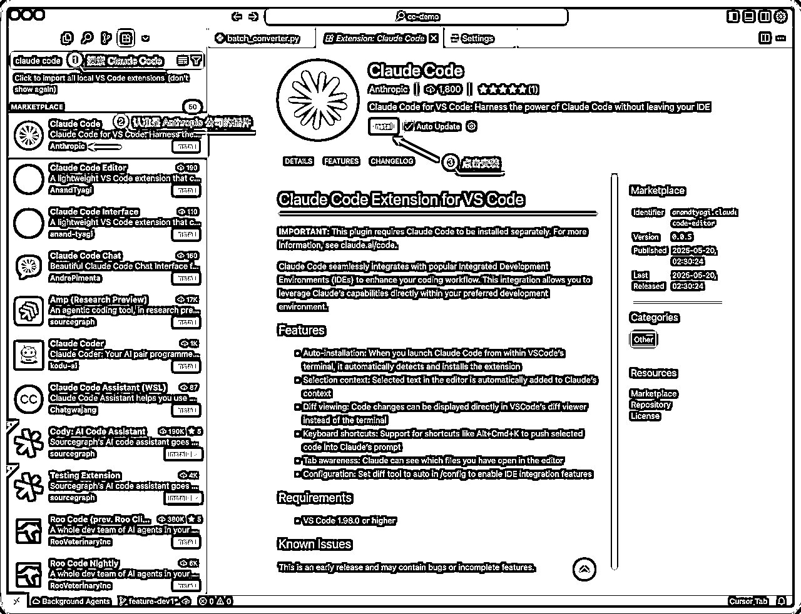
方法一：使用快捷键，Cmd+Escape，不过我的不好使，大家可以试一试
其实也可以改掉快捷键。
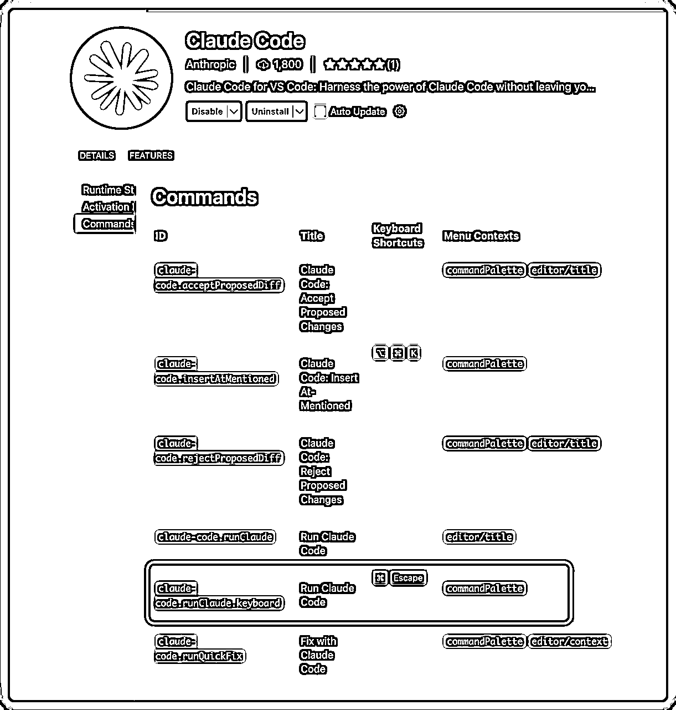
方法二：直接使用 Cursor 界面的如下图所示的图标，鼠标单击就行
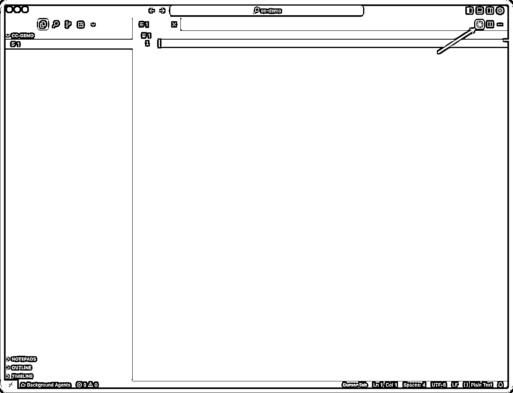
可以看到右侧的就是 ClaudeCode 的工作区域了
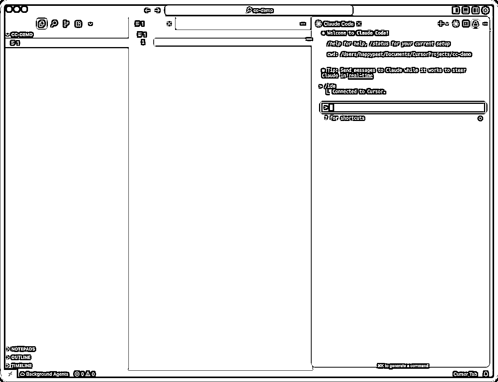
如果你是 windows 可以看我之前发的资料，通过 wsl 插件来连接也是可以用上的。
使用场景：不需要每次创建文件、编辑文件操作都需要你的确认。
使用方式：shift+tab 按一次，就可以进入该模式。
案例使用提示词：
帮我创建一个酷炫的 todolist 应用
使用场景：具体需要对某个文件操作的时候
使用方式：直接使用 @ 符号就可以指定文件。这个跟 Cursor 的是保持一致的。
使用场景：遇到疑难杂症，或者是规划方案的时候，重构代码，解决复杂 bug
使用方式：提示词里面使用 “ultrathink”，或者“深度思考”等关键词
roocode，cline，Cursor（ask）
使用场景：前期需要规划项目的时候，或者是解决疑难杂症的时候。
使用方式：shift+tab 按两次就可以看见
举例：
我想写一个像素风格的todolist，我需要移动端也可以使用，帮我规划下方案
开始思考方案：
最后的结果如下：
它会让你是否继续，如果你觉得不满意，可以选择 No，然后继续跟他说你的需求
如果你觉得还行就可以选择 yes，它就开始猛猛干活了。
使用场景：需要调整页面结构，或者是排查错误
使用方式：mac 上直接使用 ctrl+v 就可以粘贴图片；也可以直接拖拽图片文件到终端
mac上的终端粘贴完图片是这样的。
如果你想看 windows 的截图，请看到最后的彩蛋哦。
| 命令 | 解释 | 使用场景 |
|---|---|---|
| /clear | 清空上下文 | 如果需要重新开始，或者是感觉 AI 已经无法解决问题 |
| /compact | 压缩对话 | 重开对话，但是不希望丢掉之前的记忆 |
| /cost | 花费 | max 不需要看，API 用户可以看到 |
| /logout /login | 登录登出 | 切换账号等操作 |
| /model | 切换模型 | 200 刀可以切换使用 opus 模型 |
| /status | 状态 | 查看当前 CC 的状态 |
| /doctor | 检测 | 检测 CC 的安装状态 |
使用场景：重构代码，或者是新项目，或者是修复 bug等场景
使用方式：
claude --dangerously-skip-permissions
进来以后会发现如下
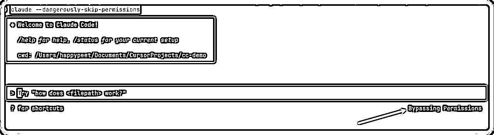
当然你在进入这个模式后，还是可以调整的，快捷键 shift+tab 就可以调整
目录：~/.claude/CLAUDE.md
下面是我的文件：
# 所有交互回答都使用中文 # 启动并行的代理执行任务 # 搜索约定 - 如需简单字符串匹配 → Grep - 如需结构化/跨语言模式匹配 → 请优先使用 Bash(ast-grep …)，示例： Bash(ast-grep -p '$FUNC($ARG)' src/) # 环境约定 - python环境：python3 pip3 - nodejs环境：node npm - docker环境：docker%
目录：项目目录下的 CLAUDE.md 文件
如果是已经有代码的项目，建议使用 /init 命令自动生成
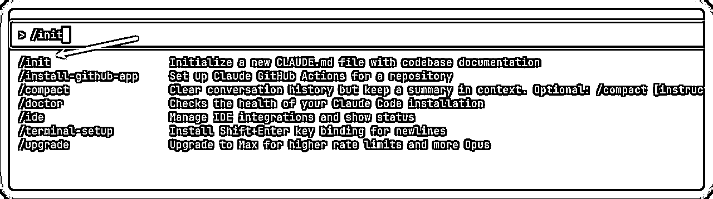
使用场景：想恢复到前面的对话
使用方式：两次 esc 按键。
选择第 3 项就会回到之前的对话框。这样如果你觉得不合适你的提示词，可以在原来的基础之上继续修改。
类似 Cursor checkpoint 功能。
使用场景：后悔他写的代码了，想恢复到前面的
使用方式：
回滚到上次的代码
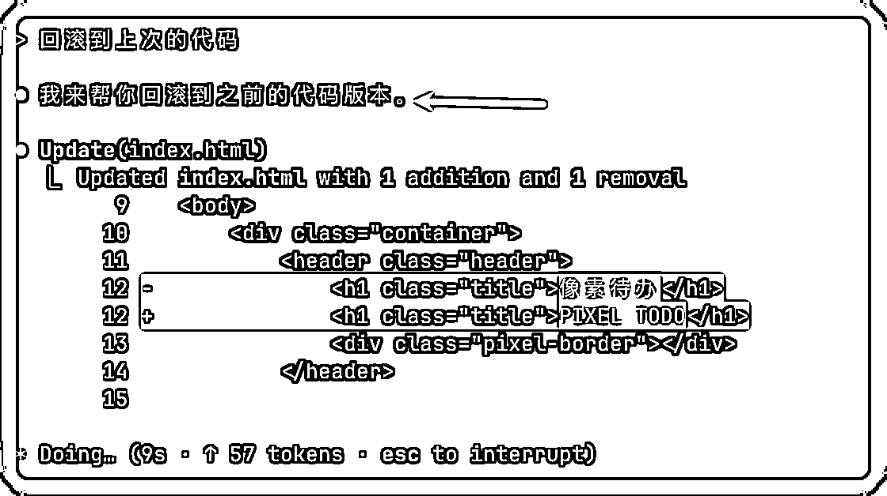
待完善。
涉及到 git 的概念
使用 git 提交每次的记录，结合自定义 commands 命令。
就可以使用 git 精确回滚代码。
使用场景：
使用方法：/resume 命令，或者使用 cladue -c claude -r
# 直接进入上次的对话中 claude -c
# 选择对话 claude -r
使用场景：查看当前目录，或者一些特殊的命令的时候
使用方式：! 英文的感叹号，就会进入命令行模式
查看当前目录
查看当前文件列表
npx ccusage@latest
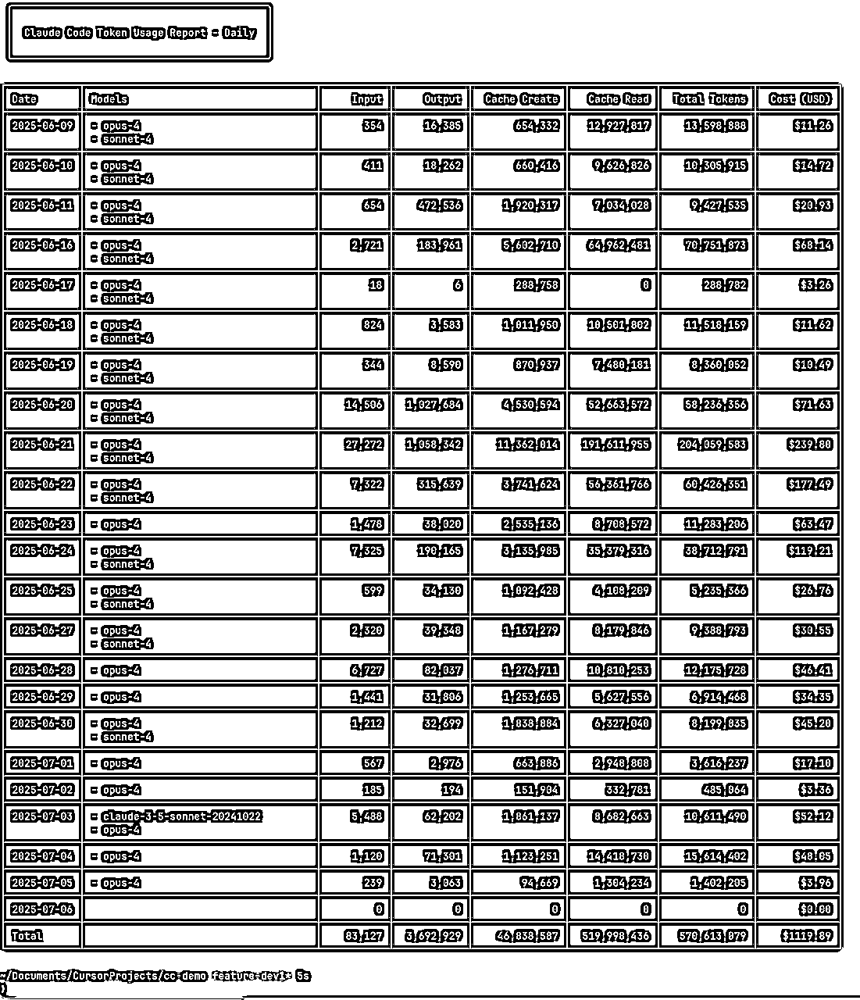
实时采集量命令：
npx ccusage@latest blocks --live
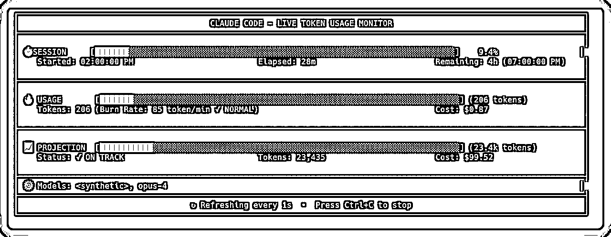
使用场景：很多场景都适合
使用方法：先安装 MCP
MCP 全称 Model Context Protocol，它就是给 AI 装“插件”的通用插座——把各种外部工具（爬虫、数据库、API……）接进来，让像 Cursor、Claude 之类的 AI 助手瞬间拥有新技能。
所以你可以把 MCP 想成“用 USB 让不同设备秒连电脑”的那套逻辑，只不过这里的“电脑”换成了 LLM。
claude mcp add playwright -s user -- npx @playwright/mcp@latest
这里以打开小红书的例子来看一下
在浏览器里打开小红书,搜索“Claude Code”,按照浏览量多的前面排序，将前10的结果总结给我
搜索结果：
看到这里，你可能会想："14个技能点，感觉好多啊..."
我想告诉你：罗马不是一天建成的，但每天进步1%，100天后你就是另一个人。
建议你这样做：
在这个AI狂飙的时代，有人选择观望，有人选择恐惧，而聪明的人选择成长。
Claude Code的14个技能点，就是你成长的阶梯。
爬上去，你看到的将是完全不同的风景。
好了，今天的分享就到这里。
安啦，各位！
作为圈友直接分享给大家
链接：https://pan.quark.cn/s/9d53d4b11497
提取码：RY5W
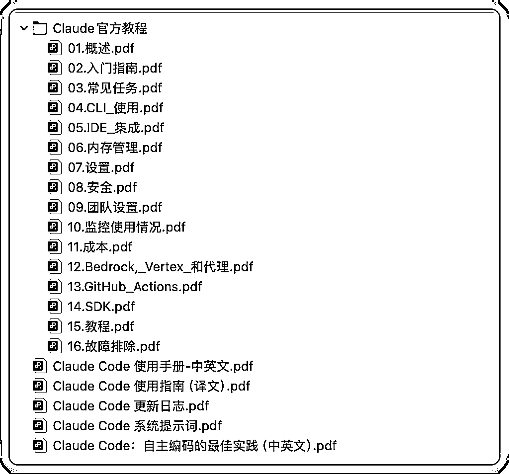
如果你觉得文章还不错，记得「点赞、转发、关注」，也可以动动你的手指点点「爱心」，你的爱心是我的持续输出的动力。我们一起在 AI 爆炸时代，充实自己，迎接 AGI 的到来。